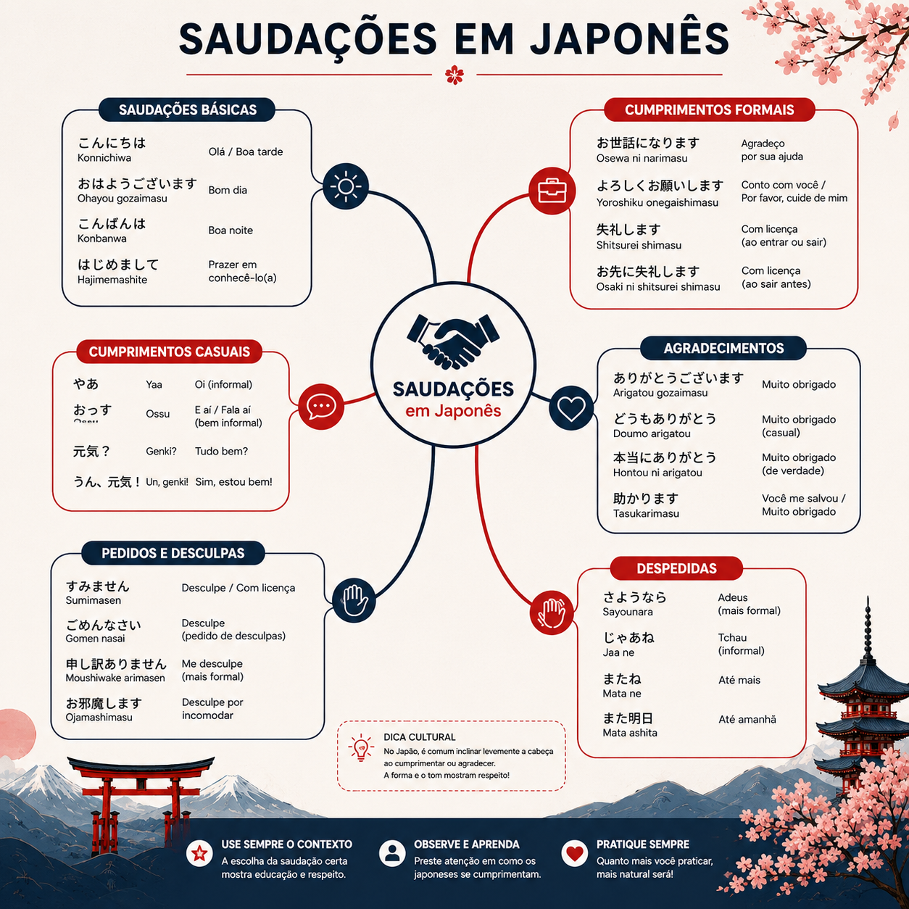
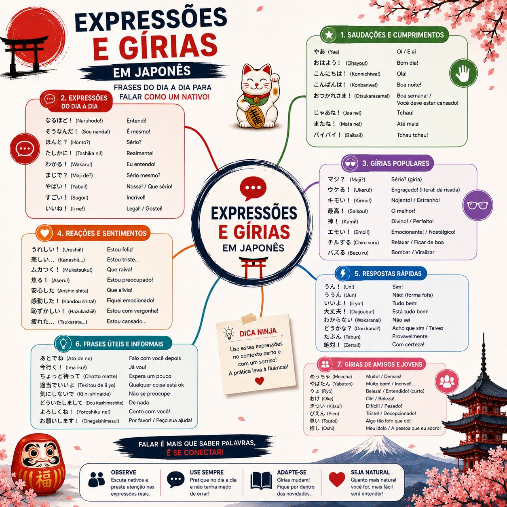
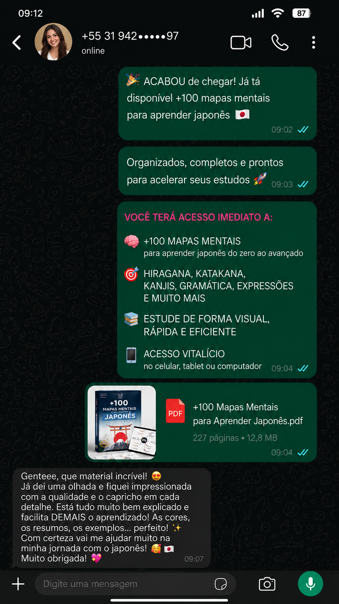
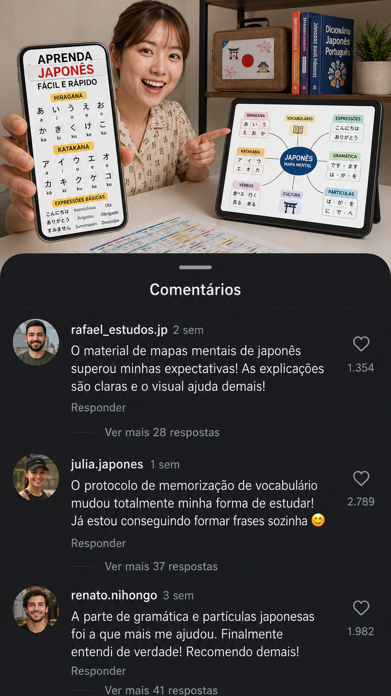
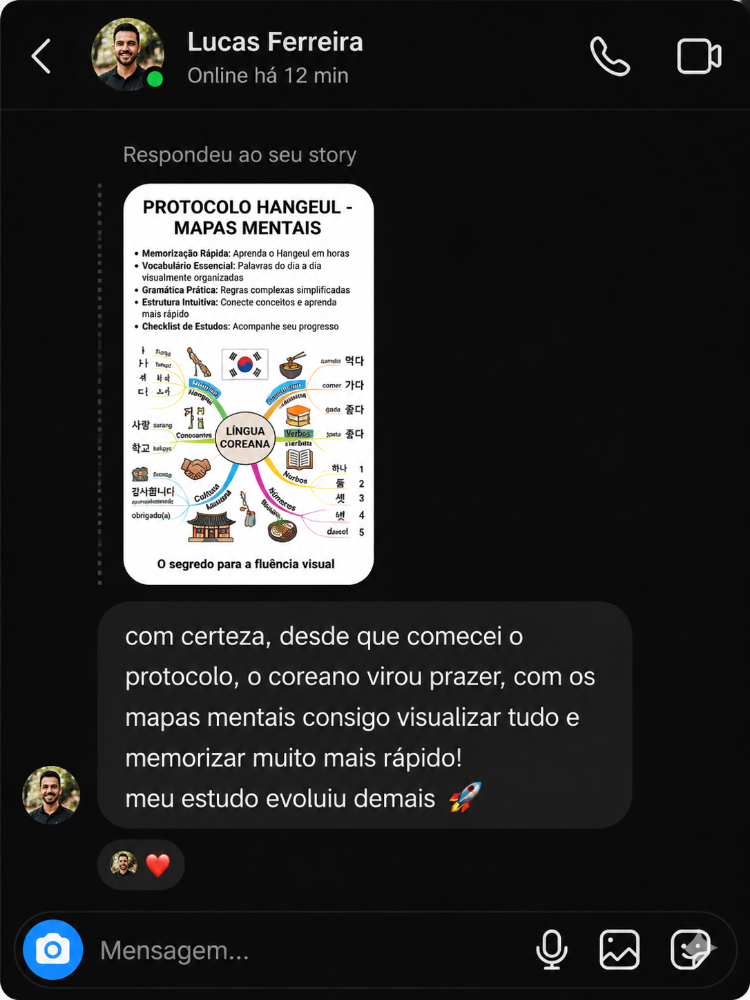

🔥 Mais cobiçado

Bónus 01 · Guia Completo do Hiragana e Katakana
Aprende os dois alfabetos japoneses passo a passo de forma simples e visual.
De 47,00 €INCLUÍDO GRÁTIS
🇯🇵 MÉTODO VISUAL · ACESSO VITALÍCIO

🔒 Compra segura · 7 dias de garantia · Acesso vitalício
Todo o conteúdo já está organizado pelos níveis oficiais do JLPT. Basta abrir o nível correspondente ao teu momento e começar a estudar.
Mais de 100 mapas mentais organizados para facilitar cada etapa da tua aprendizagem.






+ 3.000 alunos já estão a aprender de forma mais simples. Vê os prints do que nos estão a enviar.




Se sim, é porque foi feito para ti 👇
Não sabes sequer o que é Hiragana? Sem problema, o ponto de partida é exatamente esse. Não precisas saber nada antes.
Instalaste o Duolingo, viste aulas no YouTube, compraste livros PDF... e paraste a meio. Aqui o problema da repetição sem contexto desaparece.
Trabalho, faculdade, filhos, vida. 15 min no metro. 10 min antes de dormir. Já dá para avançar a sério.
Queres perceber Naruto, One Piece, "Your Name" sem andar a pausar as legendas. É aqui que esse caminho começa.
Aeroporto, táxi, restaurante, hostel. Sai do "thank you" e entra no japonês de viajante a sério.
Compra → e-mail com link → primeiro mapa mental aberto no teu telemóvel.
QUERO APRENDER AGORA ↓Compra segura · 7 dias de garantia · Acesso vitalício
+360 mapas mentais visuais organizados pelos níveis oficiais do JLPT (N5 • N4 • N3 • N2 • N1) + materiais complementares. No telemóvel, tablet ou computador.

Recebe o acesso logo após a compra e estuda onde quiseres.
E ainda tens 4 bónus desbloqueados na tua compra. Tudo incluído no mesmo valor. Zero cobranças extra.
Aprende os dois alfabetos japoneses passo a passo de forma simples e visual.

As expressões mais utilizadas em situações do dia a dia.

Frases úteis para compreender e utilizar em situações reais.

Conhece costumes, comportamentos e curiosidades do Japão.
Escolhe o plano certo para ti e começa a estudar hoje.
Apenas:
8,90 €
pagamento único por cartão
De 245,00 € por apenas:
14,90 €
pagamento único por cartão
Compra segura · Acesso imediato · Garantia 7 dias

João Ferreira é português e mudou-se para o Japão através da Living Japan, onde viveu na cidade de Tama, nos arredores de Tóquio, e estudou japonês durante 2 anos na escola para estrangeiros Sakuragaoka Gakuen.
Durante esse período, apercebeu-se de que aprendia e memorizava os conteúdos com muito mais facilidade quando organizava o estudo de forma visual. Foi assim que começou a criar os seus próprios mapas mentais para estudar kanji, vocabulário e gramática.
Foi desta experiência que nasceu o Nihongo Fácil — uma coleção com mais de 360 mapas mentais, criada para ajudar qualquer pessoa a aprender japonês de forma simples, visual e prática.
Não. O material foi feito para começar do absoluto zero. Mesmo que nunca tenhas visto o Hiragana, os mapas mentais guiam-te visualmente passo a passo.
Sim. O conteúdo é organizado por níveis de dificuldade. Começas pelo Hiragana e vais avançando ao teu ritmo até frases reais.
Logo após a compra, recebes o link de acesso diretamente no e-mail indicado. Em poucos minutos já podes começar a estudar.
Acesso vitalício. Pagas uma vez e tens o material para sempre, sem mensalidade.
Sim. Tudo é otimizado para telemóvel, tablet ou computador. Estuda onde e quando quiseres.
Sim. No Plano Premium recebes os 4 bónus exclusivos sem qualquer custo adicional.
Não existe mensalidade. É pagamento único.
Sim. Tens 7 dias de garantia incondicional. Se não gostares do material, basta solicitar o reembolso por e-mail.